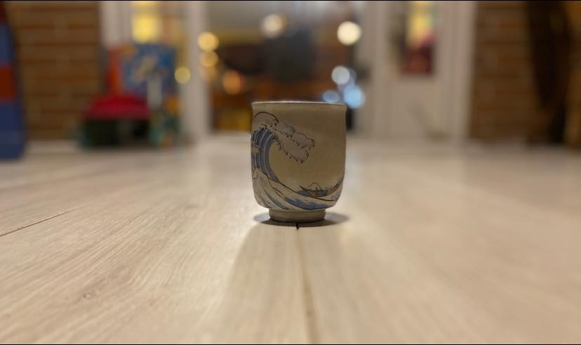

Mobile uploads
My wife, Rocky, and I have 16 days left on a 75 day diet and workout program.
When we started, we were only allowed 2 cups of coffee or tea. Then we could have as much green tea as we wanted the rest of the day. The rest was to be 4 liters of water.
Yesterday we were supposed to stop all caffeine and if we wanted a hot beverage we could put some lemon and fresh ginger in water.
Both steps down of caffeine consumption were hard for me. I don’t think Rocky had too much trouble with the first stage. She never had much more than 2 cups of coffee a day. I drank black tea all day until about 4pm.
Yesterday was a lot harder than I thought it would be. I was really foggy most of the morning. Because I work at home for myself, I took an hour nap at about 11am. Then I went for a run. I felt pretty good the rest of the day.
Rocky, on the other hand, is an admissions director at a private school. She had a huge day at work. Her school is going through this massive accreditation process that happens every 7 years. The accreditation team has been at their school all week. Yesterday was a huge final day of those intense meetings. Then she had to take those people to the airport after work.
She had to break down and have a cup of coffee at 11am. She was too cloudy and dazed from the lack of caffeine. She couldn’t make it. She needed to be “on” for the rest of her day.
As I was settling in for my work-from-home privileged nap, she was forced to drink a cup of coffee to push through the rest of her hectic day.
Coffee is a performance enhancing drug. If you don’t believe your multi-cup caffeine addiction hasn’t become a crucial crutch for your day to day existence, try not drinking any caffeine all day tomorrow and see how long you can make it.
Now, imagine a person who has just had their tent burnt down, is starving and it’s 20 degrees outside. Do you really think quitting your drug of choice in that setting is at all possible? It’s not. To quit any drug you have come to rely on in this scenario is super-human. I’m not saying it can’t be done. But you probably couldn’t do it. Most people can’t.
I’ve quit alcohol, cigarettes and coffee. And yesterday I quit all caffeine. I’m an addict. I’m not a person who can moderate anything. At my peak I was doing 2 pots of coffee, 2 packs of cigarettes and 24 beers - a day.
If you aren’t an addict like me you might not understand what my drugs meant to me. Alcohol is my soul mate. She and I could easily start our spiral into death at any minute. 20 years later and I still dream about drinking. That feeling where I’m completely gone is so appealing. But it’s death. And I now have things I want to do in life. So we can’t be together.
When I quit alcohol it was like saying goodbye to the only friend who truly understood me at my most basic level. That’s a mental and spiritual addiction.
That’s what a lot of homeless people are experiencing with meth and fentanyl. When every human has abandoned them in their most desperate time of need, those drugs were always there for them. To think you can just let that go when your entire existence is an out-of-control hell, is completely ignorant.
Humans are mentally ill. All of us. To be human is to be mentally ill. We are so different than everything else on this planet. We are alone in our thoughts. Of course we’re addicts. How could we not be?